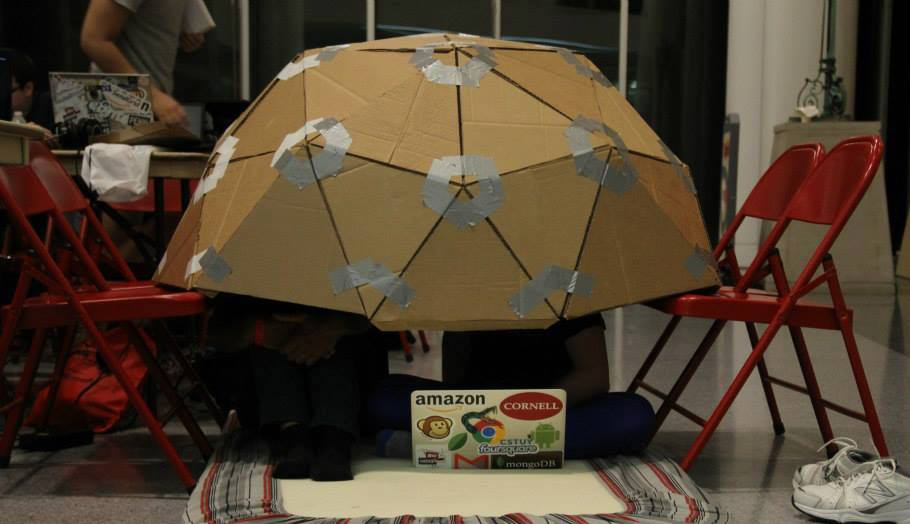

About
Hi, I'm Zachary. I study Computer Science at Cornell University, set to graduate from the Engineering school in May 2017. My interests include software development, game design, and computer graphics — but also art, music, and design. I'm a member of the Cornell Glee Club, Cornell's premier all-male choral ensemble, as well as the assistant musical director of the Cornell Chai Notes, a popular A Cappella group on campus.
Interests
-
Art
Lettering, typography, graphic design, sketching, logo design, woodworking, and cardboard construction.
-
Music
A Cappella, barbershop, arranging, amateur beatboxing, and overtone singing.
-
Tech
Web development, UI design, OpenGL, data visualization, game design, computer graphics, programming languages, algorithms, and functional programming.
-
Fun
Bodyboarding, Unicycling, playing Settlers of Catan, and solving Rubik's cubes.
Résumé
I worked at Google on AdWords the summer of 2015. The summer before, I worked at Bloomberg making charts and data visualizations, going on to work part-time in the fall. I got my start as a web developer for V.I.A. Vintage Intelligence Agency.
For more information in a printable form, here's my résumé. And if you like the look of my template, the LaTeX class file is freely available on GitHub.
Projects
Over the years, I have worked on quite a few projects. Check out my video game Impulse, music visualizer A♯, failed Big Red Hacks project horcrux, hardware hack
coding dome, Google Game Jam winner Sleepy Bob, and more.
-
Impulse
Watch the promo video or play the game for yourself
Impulse is great, check it out!
-
A♯: Music Visualizer
Watch the promo video or view the code on GitHub
A♯ (A Sharp) is a Music Visualizer that attempts to truly visualize music, rather than just accompany it.
-
Horcrux: Distributed Data Repository
This was a hackathon project for Big Red Hacks 2014, it was supposed to work but oauth took so long that we couldn't finish. C'est la vie...
-
Cardboard Geodesic Dome
This was a fun project that I decided to do during Big Red Hacks, to provide a place to code and sleep in during the weekend hackathon. Because my team's project ended up going so horribly, I ended up submitting the dome as a
hardware hack
— I was much more proud of it than I was of horcrux.Although the dome didn't end up winning any prizes, everyone I talked to was really interested in it and found it to be quite amusing. My favorite part of it all was when I ended up presenting the project to the guys from Oracle who were in charge of judging the hardware category. They kept asking me about what my plans were for improving it, and didn't want to believe that it's just a shell of cardboard I made to live in for two days.
-
Sleepy Bob: Winner of the Cornell Google Game Jam

Play the game or view the code on GitHub
Sleepy Bob is a parallax sidescrolling game with dreamy graphics and lifelike ragdoll physics.
Bob is sleepwalking and he needs your help! The goal is to navigate him to the bed without waking him up. Bob starts waking up if you shake him too much, or if he hits the objects around him.
Built in less than 24 hours, Sleepy Bob utilizes libraries such as Box2D.js and jQuery, and is deployed with a Flask (python) backend.
-
Poem Generator: Presented at Google, NY

Try generating your own poem or view the code on GitHub
Poem Generator is an online tool for creating computer-generated poems, as well as a social platform for sharing these poems with the community. With Poem Generator, users can generate sonnets, haikus, free-verse, and rhyming poems — or poems in the style of famous poets like Shakespeare and Edgar Allan Poe. The most recently generated poems are automatically displayed on the site's home page, and users can even share their poems via facebook. So sign up, log in, and get started!
Poem Generator is powered by Flask, MongoDB, and NLTK. The poem generation engine uses NLTK as a rhyming library and syllable counter, and implements Markov chaining on a corpus of text to emulate various poets' styles.
-
Sounds of the Streets

Listen to your location's playlist or view the code on GitHub
Sounds of the Streets is an inventive way of discovering new songs. Have you ever been in a famous location and wanted to hear the songs written about it? Or maybe you're on a road trip and want to listen to a playlist about the areas you pass through. Sounds of the Streets does all of this for you, and more. Input a location, whether it be your current GPS or Wifi-determined location, or one you search for manually, and Sounds of the Streets will find the popular songs relating to that area. It works by determining the nearest relevant landmark, street, state, or country, and finding songs referencing that place in the title. Then it finds the music video on YouTube and starts playing it for you.
Built with the Google Maps, YouTube, and Last.fm APIs, as well as Flask for a python backend.
-
StuyDash

StuyDash is a dashboard web application with everything a Stuyvesant High School student needs to know about his or her day. From the bell schedule widget to the weather, StuyDash knows it all.
StuyDash works by screen-scraping the confusing and unappealing Stuyvesant website and displaying the useful stuff in an intuitive way. StuyDash's main feature is a widget that intelligently displays the correct bell schedule for the day, giving a quick and easy view of what period it is at the moment. It also incorporates recent school news and the current weather. On top of this, StuyDash features links to the most necessary and useful outside websites for quick access to even more information.
There's more? StuyDash is even more accessible, providing a 24-hour automated hotline that users can call to get the most recent information. In addition, users can text queries to StuyDash and get the day's info all while they commute to school.
The StuyDash website uses Flask for a python backend, and is made beautiful with jQuery animations and CSS. The StuyDash text and phone interface is powered by Twilio.